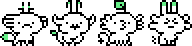

Yufo is a virtual pet.
Yufo was created with Rekka Bellum, for the Virtual Pet Jam 2022. The game was written in Uxntal, and the sprites were designed in nasu.
Yufo's planet got drunk, so now they're stuck in limbo-verse, waiting till things improve at home. Another creature lives in limbo-verse, with the ability to either ensure its safety, or its demise. Let's hope the creature is kind...
The game has the same basic mechanics as a Tamagotchi, you can wash it, feed it, play with it (by way of playing rock, paper scissors), you can also give it medicine whensick, make it rest, scoop up its deposits, or check its vitals (hygiene, hunger, fitness and happiness).
After a few hours on earth, it returns to its home planet.
16B09— Yufo Uxn Release